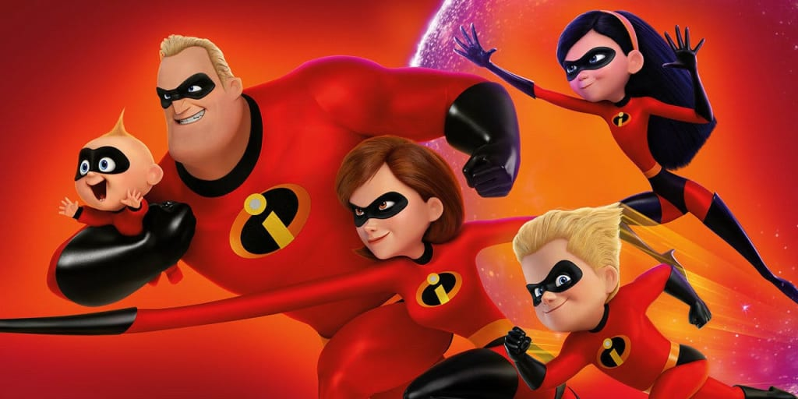

About Jack-Jack Parr
John "Jack-Jack" Jackson Parr is the youngest son of Bob and Helen Parr, as well as the younger brother of Violet and Dash. His primary power is shape-shifting, but he also has a large number of other powers.

Jack Jack Parr's Superpowers
- Wall-crawling
- Polymorphing
- Transforming into a demon baby
- Transforming into a fire baby
- Transforming into a gaint baby
- Mimicry
- Turning body into metal
- Turing body into rubbery substance
- Molecular vibration
- Duplicating
- Phasing
- Teleportation
- Interdimensional travel
- Laser eyes
- Generate electricity
- Telekinesis
- Levitation
Jack Jack Parr's Powers Video
Jack Jack Parr's Family
- Robert Parr - Dad
- Helen Parr - Mom
- Violet Parr - Sister
- Dashiell Robert Parr - Brother
Robert "Bob" Parr, also known as Mr. Incredible, is the husband of Helen Parr and the father of Violet Parr, Dash Parr, and Jack-Jack Parr. He is the protagonist of The Incredibles and the deuteragonist of Incredibles 2.
Helen Parr, also known as Elastigirl and Mrs. Incredible, is the wife Bob Parr and the mother of Violet Parr, Dash Parr, and Jack-Jack Parr. She is the deuteragonist of The Incredibles and the protagonist of Incredibles 2. She is an Elastic Just Like Marlie.
Violet Parr is a major character in The Incredibles and Incredibles 2. She is a female super-heroine who is the daughter (and eldest child) of Bob and Helen Parr, as well as the older sister of Dash and Jack-Jack. At first, she is shy, gloomy, and nervous. But after receiving a pep talk from her mom in Nomanisan Island, she becomes much more confident.
Dashiell Robert Parr also known as Dash is a major character in The Incredibles and Incredibles 2. He is the son and middle child of Bob and Helen Parr, the younger brother of Violet, and the older brother of Jack-Jack.
